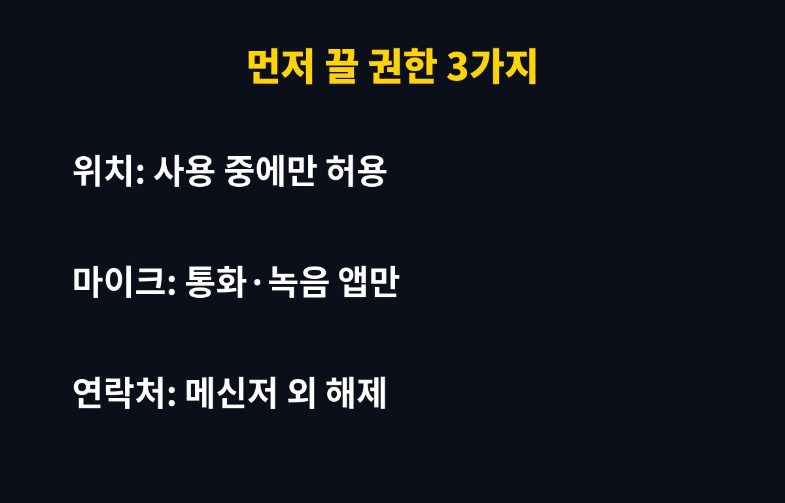
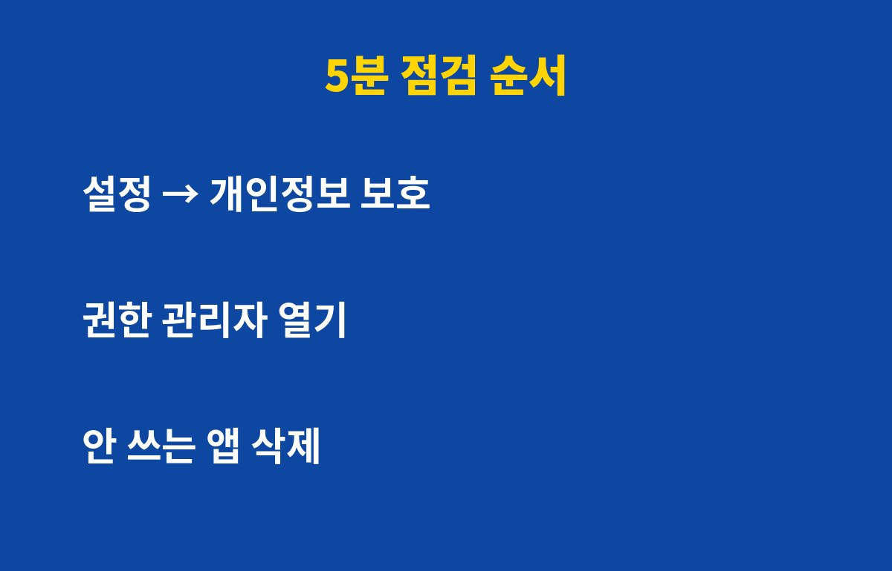

앱 권한은 5분만 점검해도 위치·마이크·연락처 정보가 불필요하게 새는 길을 크게 줄일 수 있어요. 스마트폰을 쓰는 분이라면 대부분 해당돼요.
그런데 권한을 무조건 다 끄면 오히려 앱이 먹통이 될 수 있어요. 어떤 권한을 끄고 어떤 건 남겨야 하는지, 이유는 아래에 있어요.
앱을 설치할 때 "허용"을 습관처럼 눌렀다면, 지금 폰에는 쓰지도 않는 앱이 위치와 마이크에 접근할 수 있는 상태일 가능성이 높아요. 한 번 허용한 권한은 앱을 안 써도 그대로 유지되는 경우가 많아요.
특히 오래전에 깔고 잊어버린 앱, 이벤트 때문에 설치한 앱이 문제가 되기 쉬워요. 이런 앱은 업데이트도 잘 안 되어서 보안이 허술한 경우가 많아요.

첫째는 위치예요. 지도·배달·날씨 앱이 아니라면 "앱 사용 중에만 허용"으로 바꾸거나 꺼도 충분해요. 항상 허용으로 되어 있으면 내 이동 경로가 계속 기록될 수 있어요.
둘째는 마이크예요. 통화·녹음·음성검색에 필요한 앱 외에는 꺼두세요. 셋째는 연락처예요. 메신저나 통화 앱이 아닌데 연락처를 요구한다면 이유를 한 번 의심해 볼 만해요.
| 권한 | 남겨도 되는 앱 | 끄는 게 좋은 앱 |
|---|---|---|
| 위치 | 지도, 배달, 날씨 | 쇼핑, 게임, 계산기 |
| 마이크 | 통화, 녹음, 화상회의 | 쇼핑, 손전등, 게임 |
| 연락처 | 메신저, 통화 | 게임, 쿠폰, 이벤트 앱 |
안드로이드는 설정 → 개인정보 보호 → 권한 관리자로 들어가면 위치·마이크·연락처별로 어떤 앱이 접근 중인지 한눈에 보여요. 아이폰은 설정 → 개인정보 보호 및 보안에서 같은 항목을 볼 수 있어요. 기종에 따라 메뉴 이름은 조금 다를 수 있어요.

목록에서 처음 보는 앱이나 몇 달간 안 쓴 앱이 있다면 권한을 끄는 것보다 아예 삭제하는 쪽이 더 깔끔해요. 삭제해도 필요하면 언제든 다시 설치할 수 있으니까요.
앱이 갑자기 기능을 못 쓴다고 하면 그 앱이 꼭 필요로 하는 권한만 다시 켜면 돼요. 이때 "항상 허용" 대신 "사용 중에만 허용"을 고르면 편의와 안전 사이에서 균형을 맞출 수 있어요.
한 달에 한 번, 휴대폰 정리하는 날에 권한 목록을 훑어보는 습관만 들여도 충분해요. 오늘 5분만 투자해 보세요.
도움이 되셨다면 구독해 두시고, 다음 폰 보안 꿀팁도 놓치지 마세요.
기사·공식 발표 기준이며 출시·가격 정보는 바뀔 수 있어요.